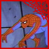
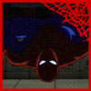
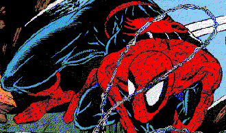

|
|
Animated Series of
Lonely orphaned teenager Peter Parker goes to a science fair at MidTown High School. There was a radiation demonstration taking place, but when a spider is infected by the radiation and bites the schoolboy, it changes his life forever. That spider gives Peter the proportionate strength, speed and agility of a spider, as well the ability to stick to most surfaces throughout the contact with his hands and feet. He also possesses the an intuitive spider sense which warns him of incoming danger. Using his newfound powers, Peter becomes a major TV star. With all the fame going to his head, Peter becomes an egomaniac. One night in while leaving a TV studio, he ignores the plea of a cop to stop a burglar. A few days later, the burglar goes over to the Parker house because he had found out (in jail) that their house had some large amount of money hidden somewhere. Once there, a burglar (Mr. Carradine) meets Peters uncle Ben and his aunt May. Ben gets murdered by the burglar and he dies in his wifes hands. Peter, who was out of the house at the time, returns home and is told that Ben has been murdered. Peter goes off to put on his Spidey costume, but unknowingly to him, he doesnt notice Mary Jane Watson (the niece of Mays best friend and neighbor, Anna Watson) who is next door and just saw him leave. Spidey manages to capture the killer who turns out to be the burglar Spidey refused to capture. With that Spider-Man remembered his uncles words With great power must come great responsibility and the new hero vowed never to let another innocent person be hurt because of his inactivity.">Lonely orphaned teenager Peter Parker goes to a science fair at MidTown High School. There was a radiation demonstration taking place, but when a spider is infected by the radiation and bites the schoolboy, it changes his life forever. That spider gives Peter the proportionate strength, speed and agility of a spider, as well the ability to stick to most surfaces throughout the contact with his hands and feet. He also possesses the an intuitive "spider sense" which warns him of incoming danger. Using his newfound powers, Peter becomes a major TV star. With all the fame going to his head, Peter becomes an egomaniac. One night in while leaving a TV studio, he ignores the plea of a cop to stop a burglar. A few days later, the burglar goes over to the Parker house because he had found out (in jail) that their house had some large amount of money hidden somewhere. Once there, a burglar (Mr. Carradine) meets Peter's uncle Ben and his aunt May. Ben gets murdered by the burglar and he dies in his wife's hands. Peter, who was out of the house at the time, returns home and is told that Ben has been murdered. Peter goes off to put on his Spidey costume, but unknowingly to him, he doesn't notice Mary Jane Watson (the niece of May's best friend and neighbor, Anna Watson) who is next door and just saw him leave. Spidey manages to capture the killer who turns out to be the burglar Spidey refused to capture. With that Spider-Man remembered his uncle's words "With great power must come great responsibility" and the new hero vowed never to let another innocent person be hurt because of his inactivity. With Ben gone, May have lost all means to support herself and Peter. Hoping to make money, Peter decides to return to the entertainment business. When he goes to see Maxie Schiffman, Maxie wouldn't represent him anymore because the Bugle has been bashing him, and Spidey's reputation has gone down. In hopes of making money, the teenager tries to join the Fantastic Four, but the super-hero team turns him down and the hero leaves furiously. That would be the first meeting between Spidey and the Human Torch, Johnny Storm, two heroes who would distrust each other at first (because they were so alike), but they would become the best of friends later on. From there, Spidey would fight the Chameleon (Dmitri Smerdyakov), the Vulture (Adrian Toomes) and the Tinkerer (with actors in alien costumes - one of them being Quentin Beck, later known Mysterio) and he'd defeat them by using his mind and strength. Still having not solved his financial problems, Peter gets the idea of taking pictures of Spider-Man fighting super-villains and selling them to newspapers, such as the Daily Bugle. Peter heads off to the Bugle, there he meets for the first time its editor, the hard headed anti-vigilante J. Jonah Jameson. Peter agreed to sell the photos to JJJ if he didn't have his name printed on the paper and that JJJ would never ask how he manages to get such great pictures of the hero. But before his super-hero career could kick into high gear, it would appear that it would end very quickly. JJJ would tell Peter Parker to go get pictures of a scientist named Otto Octavius. When Spidey went to check out the scientist Octavius, now named Doctor Octopus, quickly disposed and humliated the hero. Spidey was acting irrational and overconfident, which eventually led to his downfall. Peter was so embarrased that he quit being a hero. A few days later, the Human Torch would be speaking at Midtown High. Peter goes and it seems to him that Johnny Storm is directly talking to Peter. This gives Peter his confidence back and goes back to fight Doc Ock. This time he defeats the man with 6 arms. From there Spidey would fight a bunch of new super-villains like Doctor Doom (Victor Von Doom), Mysterio (Quentin Beck), Sandman (William Baker/Flint Marko), Electro (Maxwell Dillon), Kraven (Sergei Kravinov) and the Lizard (Curt Connors). At school, Peter's been having his own problems. Football star Eugene "Flash" Thompson has been bullying the troubled teen for several months because his girlfriend Liz Allan would develop a crush on Peter. At work, Peter would fall in love with J.J.J's personal secretary Betty Brant. Peter and Betty would go out together, and she'd be jealous of Liz whenever she spends time with Peter. The couple would have a brief relationship, but it would end badly for them. When Betty's brother Bennett gets shot during Spidey-Ock fight, Betty blames Spider-Man for the death of her brother. So Peter, who was ready to tell her about his double life, backs off and breaks off the relationship. Betty would proceed to see Bugle reporter Ned Leeds. Peter didn't have much time to dwell on his first failed relationship, because Spider-Man's life was about to get much worse as he was getting ready to meet his greatest foe for the first time, the Green Goblin. Hoping to gain notoriety in the underworld, the Green Goblin has handpicked Spider-Man to eliminate. Along with the Enforcers (Fancy Dan, Montana and the Ox) the Goblin had come up with a plan to get rid of the hero. He made Spidey believe that the Goblin was shooting a movie in the west coast and he wanted the hero to be the star. Once there, Spidey discovered it was all a hoax and the villains managed to bring Spidey to a cave where they would find the incredible Hulk. After a brief fight with the Hulk, the Green Goblin would escape, but the Enforcers would be put in prison. The Goblin would fail, but he has gathered information on Spidey's powers which would help him come up with new gadgets to help him defeat the hero. He would remain at large, but his identity would remain a mystery ... for now. During all this time, aunt May wanted to set up a blind date between Peter and her best friend's niece, Mary Jane, despite the fact that Peter was dating Betty at the time. Thinking that she's ugly, Peter declines to make a date. Later, Mj would call off dates by using excuses by stating she was sick or otherwise. Peter and MJ would regret doing so, but Peter was getting ready for another big event in his life to occur; college. Peter, Flash and Liz graduate from high school. That same threesome would all wind up going to Empire State University where they would meet Gwen Stay, Harry Osborn (the son of the industrialist Norman Osborn) and Professor Miles Warren. But it would seem that Spidey wouldn't live to see Gwen, Harry and MJ, not if the Master Planner had his way. Due to a blood transfusion gone wrong, aunt May is dying. Peter gave his aunt blood, but Peter's radioactive blood didn't mix well with May's. He went to doctor Curt Connors (a.k.a. the Lizard) for help. Curt had a cure but he was missing one ingredient. One ingredient that was in the possession of the Master Planner (or Doctor Octopus). Spidey finds Ock in his secret underwater base. There, the ceiling's iron supports collapse. With the missing ingredient within his grasp, the hero is trapped beneath tons of fallen steal. Things got worse, the ceiling's cracking and the river's slowly seeping in. But Spidey's love for May causes him to overpower the steel and go on to save his aunt's life. After that battle Spidey met the threat of Mendel Stromm the Robot Master. Stromm had just been released from jail and wanted to get back at his former employer and friend Norman Osborn, but Spidey saved the day and Stromm ended up by dying. Spidey saved the day, but he was getting ready for the biggest threat to his civilian identity he has seen.
The
Goblin develops a gas which negates Spider-Man's spider sense. With that,
the Goblin discovers Spider-Man's true civilian identity. He was humuliated
that he had lost many times to a mere teenager, but he was shocked at his
true identity. He captures the hero and he takes him to his hideout where
the Goblin takes off his mask and reveals his own ID to Peter. The Goblin
was the father of one of his closest friends, Norman Osborn !! The Goblin
tells his origin; Norman had his partner Stromm arrested, and while looking
through Stromm's stuff, Norman found a formula that would give him great
strength and intelligence. He took the
formula and became the Green Goblin ! After that. the two fought until an
explosion caused Norman to turn into an amnesiac. He would forget that he
ever was the Green Goblin, and that Peter is Spider-Man, thus eliminating
the last few years of his life from his brain. Spidey burnt Norman's GG
costume so the public would never find out his sceret and so Norman and
Harry can live a normal life together. This would be the last we'd see of
the Goblin for the meantime. Wealthy industrialist Wilson Fisk had been rumored to have been a crimelord who controled merely every activity in New York City. Fisk was rumored to be the Kingpin of Crime. Whenever a super-hero like Spider-Man or Daredevil foiled a bank robbery, Fisk would be affected. In order to stop that, the Kingpin would hire people to do his drity work. While meeting the Kingpin for the first time, Peter decided to quit being Spider-Man once and for all, but in the end, Peter comes to his senses and dons the costume once again. When helping May clean out the attic, Peter discovers a newspaper. The paper claims that Richard and Mary Parker were international spies who had betrayed U.S. secrets and were killed in a plane crash over Europe. Peter confronts May about this, and May tells Peter that she never showed showed him this because she never believed it. May also says that Ben wanted to speak with someone in Algeria who could have cleared their name, but that never happened. So Peter went on a plane to Algeria. There he met the Red Skull. The Skull admitted to framing them. As the Skull's headquarters are on fire, in also melts up Richard's ID card, to which reveals a U.S. intelligence ID underneath. Peter returns to America with the proof that his parents died defending their country, never betraying it, thus clearing his good name. Peter meets for the first time Joseph 'Robbie' Robertson (the new publisher of the Daily Bugle) and Captain George Stacy of the police force, who will become valuable allies in the future. During a fight between Spidey and Doc Ock, Ock manages to knock a wall down. That wall is going to fall on a helpless child, but George Stacy manges to save the child. But the result of saving that life, George gets crushed by the rubble. Spider-Man goes to his side and George says his final words to the hero "Peter, always look after Gwen" which means that George always knew about Peter's dual identity. With the propaganda running in the Daily Bugle claiming that Spider-Man killed the respected police captain, Gwen believed it and hated Spider-Man. Not only that, but Peter, who was trying to defend the Wall-Crawler, was dumped by Gwen. Distrought, Gwen went to England to live with her uncle Arthur and his two children Paul and Jill. A depressed Peter decides to go to England to win her heart back. Due to terrorists, Peter is forced to don the Spider-Man costume and stop them. After stopping them Peter realizes that if Gwen finds out that Spider-Man was in England and so was Peter, she might put two and two together, so Peter decides to go back to New York. Waiting back home was his deadliest foe. Peter came back to New York depressed and without the woman he loves. Harry offered Peter to go visit his father who might give Peter a job at Osborn Industries. Peter reluctantly accepts and does indeed get a job from his villain. During this time Mary Jane had pursued a career as an actress and got a part in a play. She invited Peter, Harry and Norman to see one of the plays at a theater owned by Norman Osborn. Also Mary Jane had her eye very closely on the single Peter. At the play, Norman thought something was familiar about the theater, then when he entered a room, his memories came back and he became the Green Goblin. With that knowledge he also remembered that Spider-Man was Peter Parker. He decided to attack. Meanwhile, Harry, feeling pretty low after MJ dumped him, decides to take LSD. This would cause him to get very sick. He would be forced to go to the hospital. Spidey manges to defeat his enemy when he forces the Goblin to go vist Harry at the hospital. The Goblin doesn't know what happened to his only son, so his normal mind takes over and he is knocked unconscious. When Norman wakes up, he doesn't remember a thing and goes to aid his son. Peter decides to quit from his job with Osborn, due to fear that Norman may remember his memories again. Gwen decides to return to New York and go back to Peter. Their relationship continues to flourish for the time being.
RETURN TO SPIDERMAN'S INTRODUCTION PAGE |